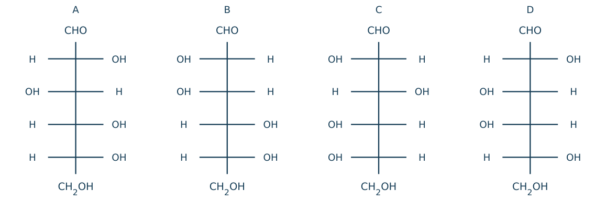
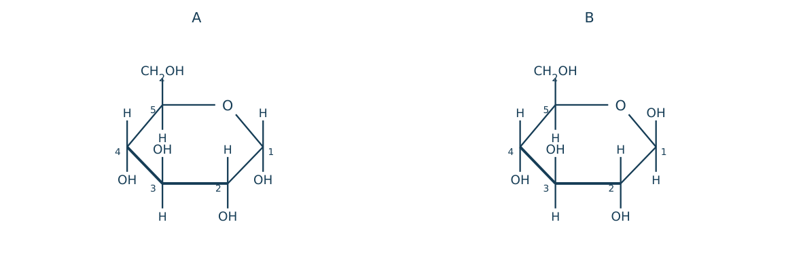
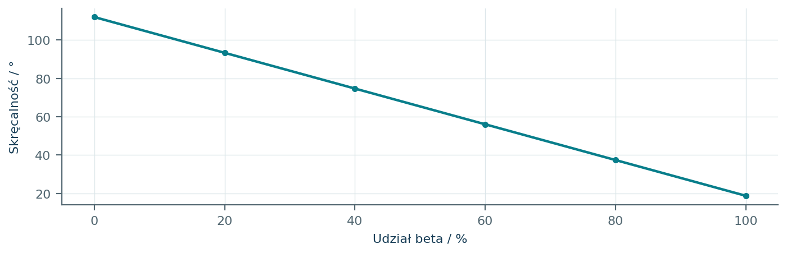
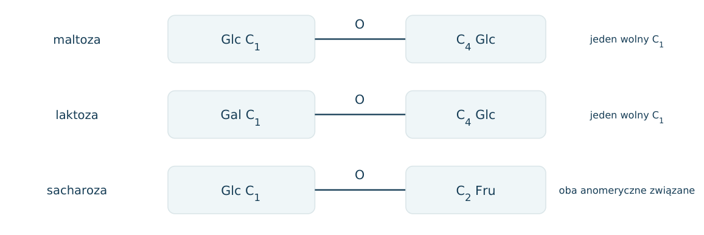
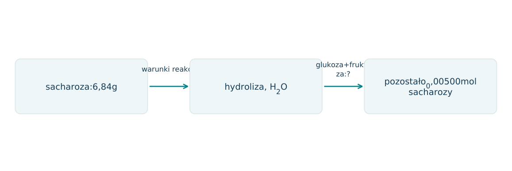
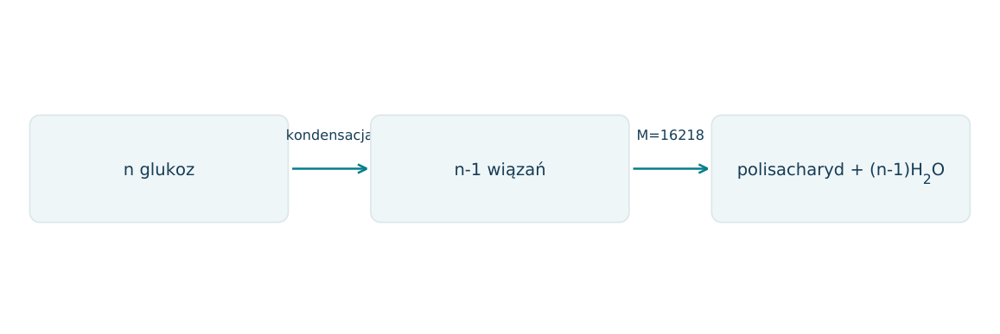
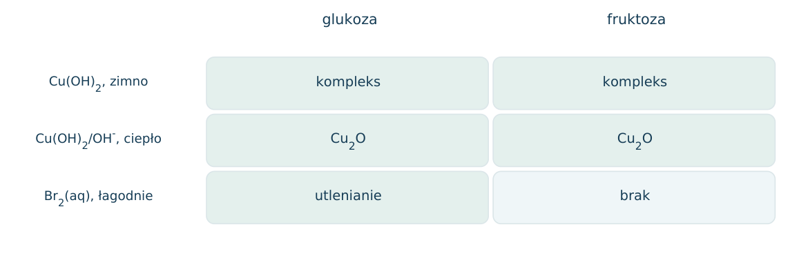
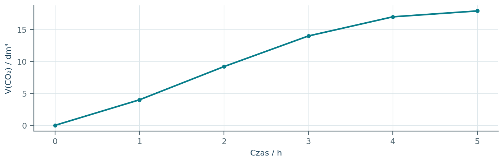
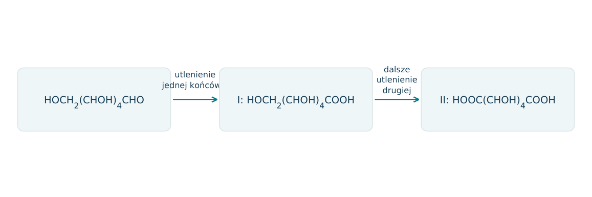

23.01 · 1 pkt
Sklasyfikuj glukozę i fruktozę według grupy karbonylowej i liczby atomów C.
Rozwiązanie
- Glukoza: aldoheksoza; fruktoza: ketoheksoza.
50 zadań · 108 pkt · odpowiedzi rozwijane po samodzielnej próbie
← KatalogZadania PDFRozwiązania PDFDane do obliczeń: H 1; C 12; N 14; O 16; Na 23; Mg 24; Al 27; P 31; S 32; Cl 35,5; K 39; Ca 40; Cr 52; Mn 55; Fe 56; Cu 64; Zn 65; Ag 108; Br 80; I 127; Ba 137 (g/mol). NA = 6,02·1023 mol-1. Vm = 22,4 dm3/mol w warunkach normalnych (0°C, 1013 hPa). W 25°C Kw = 10-14. Dane podane w zadaniu mają pierwszeństwo.
Sklasyfikuj glukozę i fruktozę według grupy karbonylowej i liczby atomów C.
Oceń zdania A i B, wpisując P albo F. Każde zdanie fałszywe popraw lub krótko uzasadnij. A: Maltoza jest cukrem redukującym. B: Oznaczenie D zawsze oznacza dodatnią skręcalność optyczną.
Dlaczego glukoza i fruktoza są izomerami konstytucyjnymi?
Co określa szereg D monosacharydu w standardowej projekcji Fischera?
Narysuj projekcję Fischera D-glukozy. Podaj kolejno położenia OH przy C2-C5.
Przykładowy rysunek rozwiązania znajduje się w PDF-ie z rozwiązaniami przy tym numerze.
Narysuj projekcję Fischera D-fruktozy. Podaj położenie C=O i OH przy C3-C5.
Przykładowy rysunek rozwiązania znajduje się w PDF-ie z rozwiązaniami przy tym numerze.
Ile centrów stereogenicznych ma łańcuchowa D-glukoza, a ile D-fruktoza?
Co powstaje przy cyklizacji glukozy w wyniku reakcji grupy CHO z jedną z grup OH?
Na czym polega różnica między anomerami α i β D-glukopiranozy w standardowym wzorze Hawortha?
Narysuj Hawortha α-D-glukopiranozy: O w prawym górnym rogu, C1 po prawej, CH2OH przy C5 nad pierścieniem. Zaznacz OH przy C1-C4.
Przykładowy rysunek rozwiązania znajduje się w PDF-ie z rozwiązaniami przy tym numerze.
Na podstawie standardowego Hawortha β-D-glukopiranozy odtwórz konfigurację Fischera. Dane OH: C1 góra, C2 dół, C3 góra, C4 dół; CH2OH góra.
Przykładowy rysunek rozwiązania znajduje się w PDF-ie z rozwiązaniami przy tym numerze.
Napisz uproszczone równanie fotosyntezy prowadzącej do glukozy. Wskaż źródło energii.
Zaprojektuj potwierdzenie obecności wielu odpowiednio położonych OH w glukozie. Podaj warunki i obserwację.
Jak wykazać redukujące właściwości glukozy próbą Trommera? Podaj warunki i wynik.
Napisz uproszczone równanie utleniania łańcuchowej glukozy wodą bromową do kwasu glukonowego.
Jak odróżnić glukozę i fruktozę wodą bromową w warunkach bliskich obojętnym? Uzasadnij różnicę.
Dlaczego fruktoza daje dodatnią próbę Tollensa mimo obecności ketonowej grupy w formie łańcuchowej? Podano, że w zasadzie izomeryzuje do aldoz.
Z jakich reszt monosacharydów składa się sacharoza?
Z jakich reszt składają się maltoza i celobioza?
Dlaczego maltoza jest cukrem redukującym?
Dlaczego sacharoza nie jest cukrem redukującym w typowych próbach?
Wskaż atomy połączone mostkiem O-glikozydowym w sacharozie: C1 glukozy i który atom fruktozy?
Napisz równanie hydrolizy sacharozy i nazwij produkty.
Jak porównać próbę Tollensa sacharozy przed i po hydrolizie? Uwzględnij przygotowanie kwaśnego hydrolizatu do próby.
Ile gramów glukozy i fruktozy otrzyma się z hydrolizy 34,2 g sacharozy, M=342 g/mol?
Ile gramów wody zużyje hydroliza 17,1 g sacharozy?
Ile gramów Ag może wydzielić 0,010 mola glukozy? Przyjmij 2 mol Ag na 1 mol glukozy.
Napisz równanie fermentacji alkoholowej glukozy i nazwij gaz.
Oblicz masę etanolu z 180 g glukozy przy wydajności 80%.
Jaki odczynnik wykrywa skrobię i jaki jest typowy wynik?
Podaj podstawową różnicę wiązań glikozydowych w amylozie i celulozie.
Dlaczego skrobia i celuloza mają różne właściwości mimo tej samej jednostki sumarycznej C6H10O5?
Napisz sumaryczne równanie pełnej hydrolizy skrobi, stosując wzór (C6H10O5)n.
Ile gramów glukozy powstanie z 16,2 g jednostek skrobi przy pełnej hydrolizie? Pomiń grupy końcowe.
Dane: A daje Lugola, B nie daje Lugola i nie daje Tollensa przed hydrolizą, ale po hydrolizie daje glukozę i fruktozę. Ustal A i B.
Cukier C12H22O11 daje Tollensa przed hydrolizą, po hydrolizie daje wyłącznie glukozę. Czy dane odróżniają maltozę od celobiozy?
Próbka ma po 0,010 mola sacharozy i glukozy. Przyjmij 2 mol Ag na mol redukującego monosacharydu, także fruktozy w Tollensie. a) Oblicz n(Ag) przed hydrolizą. b) Podaj skład po hydrolizie sacharozy. c) Oblicz n(Ag) po hydrolizie. d) Wyjaśnij, dlaczego woda bromowa bliska obojętnej odróżnia glukozę od fruktozy, a Tollens nie.
Fruktoza cyklizuje do fruktofuranozy przez reakcję C2 z OH przy C5. Podaj wielkość pierścienia i atom anomeryczny.
Narysuj β-D-fruktofuranozę w konwencji: O u góry, C2 po prawej, C3 prawy dół, C4 lewy dół, C5 po lewej. Podaj OH przy C2-C4 i położenie CH2OH przy C5.
Przykładowy rysunek rozwiązania znajduje się w PDF-ie z rozwiązaniami przy tym numerze.
Narysuj α-D-fruktofuranozę w tej samej orientacji co wyżej i wskaż jedyną różnicę względem β.
Przykładowy rysunek rozwiązania znajduje się w PDF-ie z rozwiązaniami przy tym numerze.
Każdy numer 41-50 oznacza jedno zadanie główne; podpunkty są oceniane osobno.
Na rysunku są cztery aldoheksozy. Grupy na poziomych wiązaniach są skierowane do obserwatora. Oznaczenie D/L ustala położenie OH przy najniższym centrum stereogenicznym, gdy CHO jest u góry.

23.41.1 (2 pkt) Wskaż enancjomer A oraz epimery A w zestawie.
23.41.2 (1 pkt) Przyporządkuj szeregi D/L dla A-D.
23.41.3 (1 pkt) Ile stereoizomerów łańcuchowej aldoheksozy przewiduje 2^n bez symetrii wewnętrznej?
C jest enancjomerem A; B epimer przy C2, D epimer przy C4.
A D, B D, C L, D D.
4 centra, 24=16.
Rysunek przedstawia dwa anomery D-glukopiranozy. W tej konwencji CH2OH przy C5 jest nad płaszczyzną pierścienia. Anomer α ma OH przy C1 po przeciwnej stronie niż CH2OH, β po tej samej. W wodzie formy przechodzą jedna w drugą przez formę łańcuchową.

23.42.1 (2 pkt) Przyporządkuj α/β i wskaż atom anomeryczny.
23.42.2 (1 pkt) Co rozrywa się i odtwarza przy przejściu przez formę łańcuchową: wiązanie glikozydowe czy wewnątrzcząsteczkowe półacetalowe?
23.42.3 (1 pkt) Dlaczego roztwór czystego anomeru z czasem zmienia skręcalność?
A α, B β; C1, pochodzący z aldehydowego C formy łańcuchowej.
Półacetalowe zamknięcie pierścienia; w wolnej glukozie nie ma wiązania glikozydowego między dwiema resztami.
Zmieniają się udziały form o różnej skręcalności do ustalenia równowagi, czyli zachodzi mutarotacja.
Dla α-D-glukozy skręcalność właściwa wynosi+112°, dla β+18,7°. W równowadze+52,7°. W tym modelu pomiń formę otwartą i przyjmij liniową zależność od udziałów molowych.

23.43.1 (2 pkt) Oblicz udział molowy anomeru α w równowadze.
23.43.2 (1 pkt) Czy α i β są enancjomerami? Uzasadnij.
23.43.3 (1 pkt) Dlaczego roztwór równowagowy nadal skręca światło?
52,7=112x+18,7(1-x); x=34,0/93,3≈0,364; α 36,4%, β 63,6%.
Nie; różnią się tylko konfiguracją C1, są diastereoizomerami (anomerami), pozostałe centra mają tę samą konfigurację.
Nie jest racematem pary enancjomerów; dodatnie skręcalności anomerów nie znoszą się.
Schemat porównuje wiązania: maltoza Glc(α 1→4)Glc, laktoza Gal(β 1→4)Glc, sacharoza Glc(α 1→2 β)Fru. Podano: do otwierania pierścienia potrzebne jest wolne półacetalowe/półketalowe OH przy atomie anomerycznym.

23.44.1 (2 pkt) Wskaż cukry redukujące i uzasadnij na podstawie atomów anomerycznych.
23.44.2 (1 pkt) Ile moli monosacharydów da hydroliza 0,0100 mola każdego z tych cukrów?
23.44.3 (1 pkt) Czy ujemna próba Tollensa sacharozy powinna pozostać ujemna po jej pełnej hydrolizie?
Maltoza i laktoza; mają wolny anomeryczny C1 jednej reszty. Sacharoza wiąże oba atomy anomeryczne.
Po 0,0200 mola łącznie.
Nie; glukoza i fruktoza w warunkach próby dają wynik dodatni (fruktoza po przemianach zasadowych).
6,84 g sacharozy poddano częściowej hydrolizie. Po reakcji pozostało 0,00500 mola sacharozy. M sacharozy 342, monosacharydów 180. Nie ma innych przemian. Rysunek zestawia początkowy i końcowy stan.

23.45.1 (2 pkt) Oblicz stopień hydrolizy i masy obu monosacharydów.
23.45.2 (1 pkt) Oblicz łączną masę cukrów po reakcji i wyjaśnij różnicę względem 6,84 g.
23.45.3 (1 pkt) Czy polarymetria bez modelu skręcalności składników sama dostarczyłaby jednoznacznego składu?
Początkowo 0,0200 mol; rozłożono 0,0150, czyli 75,0%; po 2,70 g glukozy i fruktozy.
Pozostała sacharoza 1,71 g plus 5,40 g=7,11 g; przyłączono 0,0150·18=0,270 g H2O.
Nie; potrzebne są skręcalności, warunki pomiaru i odpowiednia zależność dla mieszaniny.
Liniowy łańcuch składa się wyłącznie z reszt glukozy połączonych wiązaniami glikozydowymi. M całej cząsteczki wynosi 16218 g/mol, a M glukozy 180. Każde połączenie usuwa jedną H2O; pomiń izotopowe różnice mas.

23.46.1 (2 pkt) Wyznacz n, uwzględniając grupy końcowe.
23.46.2 (1 pkt) Oblicz masę glukozy z pełnej hydrolizy 1,6218 g tego polisacharydu.
23.46.3 (1 pkt) Ile moli H2O zużyto w tej hydrolizie?
M=180n-18(n-1)=162n+18; n=100.
nłańcuchów 0,000100 mol; nglukozy 0,0100 mol; m=1,800 g.
99·0,000100=0,00990 mola.
W świeżym Cu(OH)2 na zimno oba cukry dają szafirowy roztwór. Po ogrzaniu w zasadowym środowisku oba mogą dawać Cu2O; fruktoza ulega w nim przemianom do aldoz. Łagodna woda bromowa w przyjętej procedurze utlenia glukozę, a nie fruktozę.

23.47.1 (2 pkt) Wybierz próbę rozróżniającą i zapisz utlenianie formy łańcuchowej glukozy przez Br2.
23.47.2 (1 pkt) Dlaczego wynik z Cu(OH)2 na zimno nie dowodzi obecności aldehydu?
23.47.3 (1 pkt) Czy dodatnia próba redukcyjna fruktozy przeczy jej ketonowej budowie łańcuchowej?
Woda bromowa; HOCH2(CHOH)4CHO+Br2+H2O→HOCH2(CHOH)4COOH+2HBr.
Wskazuje na sąsiednie grupy OH i kompleksowanie Cu(II); daje go też ketozowa fruktoza.
Nie; środowisko zasadowe umożliwia przemiany do aldoz odpowiedzialnych za redukcję odczynnika.
Do fermentacji skierowano 90,0 g glukozy. Podano równanie C6H12O6→2C2H5OH+2CO2. Zebrano 17,92 dm3 suchego CO2 w warunkach normalnych. Przyjmij jednakową wydajność obu produktów i brak innych źródeł CO2.

23.48.1 (2 pkt) Wyznacz wydajność względem całkowitej fermentacji początkowej glukozy.
23.48.2 (1 pkt) Oblicz masę etanolu według przyjętego modelu.
23.48.3 (1 pkt) Czy zatrzymanie wzrostu objętości samo dowodzi zużycia całej glukozy?
nG=0,500; teoretycznie 1,00 molCO2,22,4 dm3; wydajność 17,92/22,4=80,0%.
nEtOH=nCO2=0,800 mol; m=36,8 g.
Nie; może oznaczać zatrzymanie procesu z innych przyczyn. Z podanego modelu reaguje 0,400 mol, pozostaje 0,100 mol glukozy.
Na schemacie pokazano dwa kierunki utleniania łańcuchowej glukozy: I tylko CHO→COOH, II zarówno CHO, jak i końcowe CH2OH→COOH. Pozostałe cztery grupy CHOH pozostają bez zmian.

23.49.1 (2 pkt) Ustal wzory sumaryczne obu produktów.
23.49.2 (1 pkt) Ile moli NaOH zużyje 1 mol każdego produktu przy zobojętnianiu samych COOH?
23.49.3 (1 pkt) Ile elektronów oddaje C grupy CH2OH przechodzący w COOH? Ustal stopnie.
I C6H12O7; II C6H10O8.
I 1 mol; II2 mole.
C wCH2OH: -I; wCOOH: +III; oddaje 4 elektrony.
Podano: każda wolna grupa OH glukozy w formie piranozowej może być acetylowana, a zastąpienie H grupą COCH3 zwiększa M cząsteczki o 42 g/mol. Rysunek pokazuje anomer β; tlen pierścienia nie jest wolną OH.
23.50.1 (2 pkt) Policz grupy OH i wyznacz M w pełni acetylowanego produktu, gdy M glukozy 180.
23.50.2 (1 pkt) Ile moli NaOH potrzeba do zmydlenia wszystkich grup estrowych w 0,0100 mola tego produktu?
23.50.3 (1 pkt) Dlaczego tlenu pierścienia nie liczy się jako szóstej acetylowanej OH?
5 grupOH; M=180+5·42=390 g/mol.
5·0,0100=0,0500 mola.
Jest związany z dwoma C i nie niesie H; nie stanowi grupy hydroksylowej.